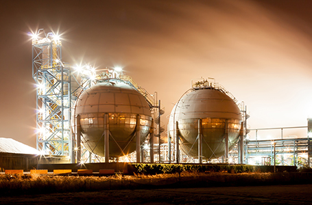

일반현황
- Home
- 울산소개
- 일반현황
동북아시아의 전략적 산업거점
울산은 한반도의 동남쪽에 위치하고 있으며 기후는 연중 온화하고 풍수해가 거의 없어 천혜의 입지 여건을 가지고 있습니다. 인구는 120만명이며 면적은 1,060㎢로 서울의 1.7배에 달합니다.
울산은 해양과 대륙의 접점에 위치하고 있어 해양과 대륙으로 진출하기 용이한 지역입니다. 또한 베이징, 상하이, 홍콩, 도쿄, 오사카 등 동아시아의 주요한 도시를 비행기로 2시간 이내에 도달할 수 있어, 전략점 거점성이 뛰어난 입지적 조건을 가지고 있습니다.


| 구분 | 1 ~ 12월 | 1월 | 8월 |
|---|---|---|---|
| 평균기온 | 14.1℃ | 2.0℃ | 25.9℃ |
| 강수량 | 671.4㎜ | 15.3mm | 69.8mm |
광대한 배후시장을 가진 동북아시아의 중심도시
한국, 중국, 일본, 대만 등을 포함하는 동북아시아는 세계인구의 25%를 차지하며 세계 GDP의 22%를 생산하는 지역으로서 세계 경제에서 가장 빠르게 성장하는 경제 블록입니다. 동북아시아지역은 2020년경 세계 GDP의 30%를 생산할 것으로 예상되며, 미래 세계 경제의 성장엔진으로 자리매김할 것입니다. 역동적이며 강력한 성장동력으로 세계경제를 견인하고 있는 동북아시아지역, 그 중심에 울산이 있습니다.
동북아시아의 경제 잠재력

울산의 경제력 비중

한국 최대의 산업클러스터
울산은 주력산업인 자동차, 조선, 석유화학 산업이 한국 최대의 산업클러스터를 형성하고 있습니다. 각 산업은 상호 연관되어 유기적인 발전을 도모하고 있으며 울산 인근의 부산, 포항, 창원지역의 철강, 기계, 항만분야와 연계되어 다른 산업클러스터보다 역동적이며 혁신적인 시너지 효과를 발휘하고 있습니다.
아시아를 대표하는 산업클러스터를 형성하고 있는 울산은 투자가에게 다양한 비즈니스 기회와 매력적인 투자환경을 제공하고 있습니다.
울산의 주력산업

에코폴리스 울산
아름다운 자연환경
울산에는 가지산, 신불산, 간월산 등 1,000m 이상의 7개 고산들이 이어진 영남알프스가 병풍처럼 도시를 감싸고 있으며, 연어와 은어, 황어가 돌아오는 맑고 깨끗한 태화강이 도심을 흐르며, 다채로운 축제와 각종 대회가 개최되고 있습니다. 또한 주전, 정자, 진하해변으로 이어지는 푸른 동해바다를 곁에 두고 있는 아름다운 도시입니다.
쾌적한 도시환경
문화예술회관, 울산박물관, 월드컵경기장, 울산대공원 등 다양한 문화·체육시설, 대형백화점, 종합유통매장, 특급호텔, 대학병원 등의 생활편의시설은 아름다운 자연환경과 함께 쾌적한 도시환경을 구성하고 있습니다.
-
간절곶 일출
-
 반구대
반구대 -

울산 산업단지 야경
-
신불산 억새평원